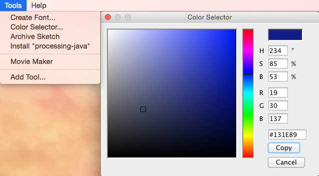

Together with your partner practice some of the programming skills you have just learned by creating a face. Your face can represent a human, an animal, a monster, a robot, or something else. Start by planning out your face on paper and then work together to write the code for your face. Keep in mind that you will later animimate your face with sound, so add some interesting elements.
To determine the colors to use in you face, use the built in color selector tool to find the RGB values. Then use either the stroke, or fill commands. stroke will change the color of a line, or the outside line of any shape. Fill will change the inside color of a shape (note: you cannot use fill with lines). You may also want to use the background method to change the color of the background of your sketch.
